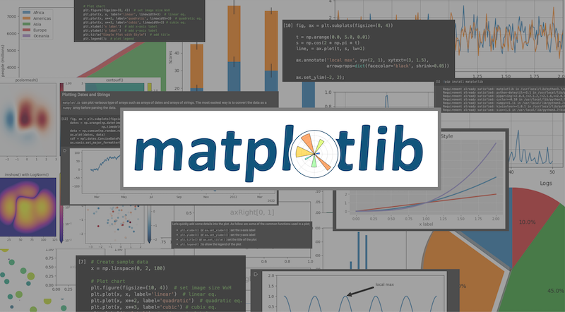
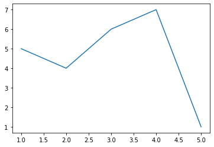

matplotlib

Matplotlib is a python library for data visualization and graphical plotting. It is widely used to visualize, analyze,
and understand the insight of the data. There are a lot of data visualization tools available in the market that can be
used, such as, Tableau, R, openCV, etc. When working with python, Matplotlib might be the easiest and common
data visualization tool that come to mind.
At a Glance
At a Glance
- Install matplotlib: How to install and import matplotlib
- Basics: explaining basics functionalities with code examples
- Parts of a Figure, Use Style, Annotations, Additional Axis Objects, Plotting Dates and Strings, Multiple Figures and Axes
- Examples: illustrating some of the examples charts
- More about Matplotlib: quick link to external resources
Install matplotlib
Matplotlib is available for operating systems. One og the easiest way is to use pip. However, there are still a few
other way to install matplotlib in your environment or on your local machine. More information are available at
matplotlib.org
Requirement already satisfied: matplotlib in /usr/local/lib/python3.7/dist-packages (3.2.2)
Requirement already satisfied: python-dateutil>=2.1 in /usr/local/lib/python3.7/dist-packages (from matplotlib) (2.8.2)
Requirement already satisfied: pyparsing!=2.0.4,!=2.1.2,!=2.1.6,>=2.0.1 in /usr/local/lib/python3.7/dist-packages (from matplotlib) (3.0.7)
Requirement already satisfied: cycler>=0.10 in /usr/local/lib/python3.7/dist-packages (from matplotlib) (0.11.0)
Requirement already satisfied: numpy>=1.11 in /usr/local/lib/python3.7/dist-packages (from matplotlib) (1.21.5)
Requirement already satisfied: kiwisolver>=1.0.1 in /usr/local/lib/python3.7/dist-packages (from matplotlib) (1.3.2)
Requirement already satisfied: six>=1.5 in /usr/local/lib/python3.7/dist-packages (from python-dateutil>=2.1->matplotlib) (1.15.0)
Before we can use matplotlib it is necessary to import the library into your working script. matplotlib is commonly
used to gather with numpy, a data manipulation library.
# Import matplotlib
import matplotlib as mpl
import matplotlib.pyplot as plt
from matplotlib import style
# Import numpy
import numpy as np
Additionally, we can choose whether to create an interactive plot or a static plot within our notebook.
Be noted that this function is only available in Google Colab or Jupyter notebook
-
%matplotlib notebookwill lead to interactive plots embedded within the notebook -
%matplotlib inlinewill lead to static images of your plot embedded in the notebook
Basics
Let's start by plotting a simple chart.
The numbers that we are plotting are
x = [1, 2, 3, 4, 5]
y = [5, 4, 6, 7, 1]
We often see .plot() and .sublpot() for plotting images and charts. The difference between both is that .plot()
will plot a single image while .subplot() will plot multiple images into on



Parts of a Figure
Before we move forward, it would make sense to know the anatomy of matplotlib first.
import numpy as np
import matplotlib.pyplot as plt
from matplotlib.ticker import AutoMinorLocator, MultipleLocator, FuncFormatter
np.random.seed(19680801)
X = np.linspace(0.5, 3.5, 100)
Y1 = 3+np.cos(X)
Y2 = 1+np.cos(1+X/0.75)/2
Y3 = np.random.uniform(Y1, Y2, len(X))
fig = plt.figure(figsize=(8, 8))
ax = fig.add_subplot(1, 1, 1, aspect=1)
def minor_tick(x, pos):
if not x % 1.0:
return ""
return "%.2f" % x
ax.xaxis.set_major_locator(MultipleLocator(1.000))
ax.xaxis.set_minor_locator(AutoMinorLocator(4))
ax.yaxis.set_major_locator(MultipleLocator(1.000))
ax.yaxis.set_minor_locator(AutoMinorLocator(4))
ax.xaxis.set_minor_formatter(FuncFormatter(minor_tick))
ax.set_xlim(0, 4)
ax.set_ylim(0, 4)
ax.tick_params(which='major', width=1.0)
ax.tick_params(which='major', length=10)
ax.tick_params(which='minor', width=1.0, labelsize=10)
ax.tick_params(which='minor', length=5, labelsize=10, labelcolor='0.25')
ax.grid(linestyle="--", linewidth=0.5, color='.25', zorder=-10)
ax.plot(X, Y1, c=(0.25, 0.25, 1.00), lw=2, label="Blue signal", zorder=10)
ax.plot(X, Y2, c=(1.00, 0.25, 0.25), lw=2, label="Red signal")
ax.plot(X, Y3, linewidth=0,
marker='o', markerfacecolor='w', markeredgecolor='k')
ax.set_title("Anatomy of a figure", fontsize=20, verticalalignment='bottom')
ax.set_xlabel("X axis label")
ax.set_ylabel("Y axis label")
ax.legend()
def circle(x, y, radius=0.15):
from matplotlib.patches import Circle
from matplotlib.patheffects import withStroke
circle = Circle((x, y), radius, clip_on=False, zorder=10, linewidth=1,
edgecolor='black', facecolor=(0, 0, 0, .0125),
path_effects=[withStroke(linewidth=5, foreground='w')])
ax.add_artist(circle)
def text(x, y, text):
ax.text(x, y, text, backgroundcolor="white",
ha='center', va='top', weight='bold', color='blue')
# Minor tick
circle(0.50, -0.10)
text(0.50, -0.32, "Minor tick label")
# Major tick
circle(-0.03, 4.00)
text(0.03, 3.80, "Major tick")
# Minor tick
circle(0.00, 3.50)
text(0.00, 3.30, "Minor tick")
# Major tick label
circle(-0.15, 3.00)
text(-0.15, 2.80, "Major tick label")
# X Label
circle(1.80, -0.27)
text(1.80, -0.45, "X axis label")
# Y Label
circle(-0.27, 1.80)
text(-0.27, 1.6, "Y axis label")
# Title
circle(1.60, 4.13)
text(1.60, 3.93, "Title")
# Blue plot
circle(1.75, 2.80)
text(1.75, 2.60, "Line\n(line plot)")
# Red plot
circle(1.20, 0.60)
text(1.20, 0.40, "Line\n(line plot)")
# Scatter plot
circle(3.20, 1.75)
text(3.20, 1.55, "Markers\n(scatter plot)")
# Grid
circle(3.00, 3.00)
text(3.00, 2.80, "Grid")
# Legend
circle(3.70, 3.80)
text(3.70, 3.60, "Legend")
# Axes
circle(0.5, 0.5)
text(0.5, 0.3, "Axes")
# Figure
circle(-0.3, 0.65)
text(-0.3, 0.45, "Figure")
color = 'blue'
ax.annotate('Spines', xy=(4.0, 0.35), xytext=(3.3, 0.5),
weight='bold', color=color,
arrowprops=dict(arrowstyle='->',
connectionstyle="arc3",
color=color))
ax.annotate('', xy=(3.15, 0.0), xytext=(3.45, 0.45),
weight='bold', color=color,
arrowprops=dict(arrowstyle='->',
connectionstyle="arc3",
color=color))
ax.text(4.0, -0.4, "Made on Google Colab",
fontsize=10, ha="right", color='.5')
plt.show()

Let's quickly add some details into the plot. As follow are some of the common functions used in a plot;
plt.xlabel()orax.set_xlabel(): set the x-axis labelplt.ylabel()orax.set_ylabel(): set the y-axis labelplt.title()orax.set_title(): set the title of the plotplt.legend(): to show the legend of the plot
# Create sample data
x = np.linspace(0, 2, 100)
# Plot chart
plt.figure(figsize=(10, 4)) # set image size WxH
plt.plot(x, x, label='linear') # linear eq.
plt.plot(x, x**2, label='quadratic') # quadratic eq.
plt.plot(x, x**3, label='cubic') # cubix eq.
plt.xlabel('x label') # add x-axis label
plt.ylabel('y label') # add y-axis label
plt.title("Simple Plot") # add title
plt.legend(); # plot legend

Use Style
matplotlib have many prebuilt style sheets ready to use. Styles can be changed by using the function style.use('STYLE'). For more styles visit style sheets reference on matplotlib.
Below the style ggplot, a style used in R, is illustrated.
# Create sample data
x = np.linspace(0, 2, 100)
# Add style
style.use('ggplot')
# Plot chart
plt.figure(figsize=(8, 4)) # set image size WxH
plt.plot(x, x, label='linear', linewidth=3) # linear eq.
plt.plot(x, x**2, label='quadratic', linewidth=3) # quadratic eq.
plt.plot(x, x**3, label='cubic', linewidth=3) # cubix eq.
plt.xlabel('x label') # add x-axis label
plt.ylabel('y label') # add y-axis label
plt.title("Simple Plot with Style") # add title
plt.legend(); # plot legend

Annotations
We can pinpoint a specific location on the plot by using annotate().
text: (str) the text of the annotationxy: (float, float) the location to pinpointxytext: (float, float) the location to place thetext- (optional)
arrowprops: (dict) to configure the arraw to pinpoint the annotation
More information here
fig, ax = plt.subplots(figsize=(8, 4))
t = np.arange(0.0, 5.0, 0.01)
s = np.cos(2 * np.pi * t)
line, = ax.plot(t, s, lw=2)
ax.annotate('local max', xy=(2, 1), xytext=(3, 1.5),
arrowprops=dict(facecolor='black', shrink=0.05))
ax.set_ylim(-2, 2);

Additional Axis Objects
We can also plot data with different magnitude in one chart and separate their axis using secondary_xaxis() for x-axis or secondary_yaxis() for y-axis.
More information go to _xaxis, _yaxis, or more examples.
t = np.arange(0.0, 5.0, 0.01)
s = np.cos(2 * np.pi * t)
fig, (ax1, ax3) = plt.subplots(1, 2, figsize=(12, 2.7))
l1, = ax1.plot(t, s)
ax2 = ax1.twinx()
l2, = ax2.plot(t, range(len(t)), 'C1')
ax2.legend([l1, l2], ['Sine (left)', 'Straight (right)'])
ax3.plot(t, s)
ax3.set_xlabel('Angle [°]')
ax4 = ax3.secondary_xaxis('top', functions=(np.rad2deg, np.deg2rad))
ax4.set_xlabel('Angle [rad]')

Plotting Dates and Strings
matplotlib can plot various type of arrays such as arrays of dates and arrays of strings. The easiest way is to convert the data as a numpy array before parsing the data.
fig, ax = plt.subplots(figsize=(12, 2.7))
dates = np.arange(np.datetime64('2021-02-15'), np.datetime64('2022-03-15'),
np.timedelta64(1, 'h'))
data = np.cumsum(np.random.randn(len(dates)))
ax.plot(dates, data)
cdf = mpl.dates.ConciseDateFormatter(ax.xaxis.get_major_locator())
ax.xaxis.set_major_formatter(cdf);

Multiple Figures and Axes
As below is an example how to plot different color maps using subplots.
data1, data2, data3, data4 = np.random.randn(4, 100)
X, Y = np.meshgrid(np.linspace(-3, 3, 128), np.linspace(-3, 3, 128))
Z = (1 - X/2 + X**5 + Y**3) * np.exp(-X**2 - Y**2)
fig, axs = plt.subplots(2, 2, figsize=(10, 10))
pc = axs[0, 0].pcolormesh(X, Y, Z, vmin=-1, vmax=1, cmap='RdBu_r')
fig.colorbar(pc, ax=axs[0, 0])
axs[0, 0].set_title('pcolormesh()')
co = axs[0, 1].contourf(X, Y, Z, levels=np.linspace(-1.25, 1.25, 11))
fig.colorbar(co, ax=axs[0, 1])
axs[0, 1].set_title('contourf()')
pc = axs[1, 0].imshow(Z**2 * 100, cmap='plasma',
norm=mpl.colors.LogNorm(vmin=0.01, vmax=100))
fig.colorbar(pc, ax=axs[1, 0], extend='both')
axs[1, 0].set_title('imshow() with LogNorm()')
pc = axs[1, 1].scatter(data1, data2, c=data3, cmap='RdBu_r')
fig.colorbar(pc, ax=axs[1, 1], extend='both')
axs[1, 1].set_title('scatter()');

Another method is to use subplot_mosaic().
NOTE: FOR SOME REASON THIS METHOD DOESN'T WORK ON GOOGLE COLAB
# fig, axd = plt.subplot_mosaic([['upleft', 'right'],
# ['lowleft', 'right']], layout='constrained')
# axd['upleft'].set_title('upleft')
# axd['lowleft'].set_title('lowleft')
# axd['right'].set_title('right');
As following is a clear representation of how to organize the code. Use subplot for ploting multiple graph in a single plot
# Helper function for the next plot
def annotate_axes(ax, text, fontsize=18):
ax.text(0.5, 0.5, text, transform=ax.transAxes,
ha="center", va="center", fontsize=fontsize, color="darkgrey")
fig = plt.figure(figsize=(10, 4), constrained_layout=True)
gs0 = fig.add_gridspec(1, 2)
gs00 = gs0[0].subgridspec(2, 2)
gs01 = gs0[1].subgridspec(3, 1)
for a in range(2):
for b in range(2):
ax = fig.add_subplot(gs00[a, b])
annotate_axes(ax, f'axLeft[{a}, {b}]', fontsize=10)
if a == 1 and b == 1:
ax.set_xlabel('xlabel')
for a in range(3):
ax = fig.add_subplot(gs01[a])
annotate_axes(ax, f'axRight[{a}, {b}]')
if a == 2:
ax.set_ylabel('ylabel')
fig.suptitle('nested gridspecs')

Examples
Histogram
A histogram represents the approximate distribution of a dataset. It shows how many of a type of data occurs within a specifc range. For example, population by grouped by age.
Below are examples of how a histogram can be ploted in different styles.
np.random.seed(19680801)
n_bins = 10
x = np.random.randn(1000, 3)
fig, ((ax0, ax1), (ax2, ax3)) = plt.subplots(nrows=2, ncols=2, figsize=(8, 8))
colors = ['red', 'tan', 'lime']
ax0.hist(x, n_bins, density=True, histtype='bar', color=colors, label=colors)
ax0.legend(prop={'size': 10})
ax0.set_title('bars with legend')
ax1.hist(x, n_bins, density=True, histtype='bar', stacked=True)
ax1.set_title('stacked bar')
ax2.hist(x, n_bins, histtype='step', stacked=True, fill=False)
ax2.set_title('stack step (unfilled)')
# Make a multiple-histogram of data-sets with different length.
x_multi = [np.random.randn(n) for n in [10000, 5000, 2000]]
ax3.hist(x_multi, n_bins, histtype='bar')
ax3.set_title('different sample sizes')
fig.tight_layout()
plt.show()

Scatter Plot
A scatter plot (also scatter graph, scatter chart, scattergram) is a chart that shows the relationship between two variables. The value of the variables are often show as a dot. A scatter plot is most used to demonstrate or group data by its correlational relationships, for example customer segmentations.
The example below shows the geo-location of populational area related to a virtual border. The x and y axis represent the distance to the border. The line shows the border location. The circle and triange represent the density of the populated are inside and outside of the border.
import matplotlib.cbook as cbook
# Fixing random state for reproducibility
np.random.seed(42)
N = 100
r0 = 0.6
x = 0.9 * np.random.rand(N)
y = 0.9 * np.random.rand(N)
area = (20 * np.random.rand(N))**2 # 0 to 10 point radii
c = np.sqrt(area)
r = np.sqrt(x ** 2 + y ** 2)
area1 = np.ma.masked_where(r < r0, area)
area2 = np.ma.masked_where(r >= r0, area)
plt.figure(figsize=(8, 6))
plt.scatter(x, y, s=area1, marker='^', c=c)
plt.scatter(x, y, s=area2, marker='o', c=c)
# Show the boundary between the regions:
theta = np.arange(0, np.pi / 2, 0.01)
plt.plot(r0 * np.cos(theta), r0 * np.sin(theta))
plt.show()

Stack Plot
A stack plot is a plot that shows the complete data with the details of how each part forms the whole. Each individual data is stacked on top of each other. A stacked plot is often used to visualize the growth of a population, or how the dataset develop over a period of time.
The example below shows the world population growth between 1950 and 2018 by continent.
# data from United Nations World Population Prospects (Revision 2019)
# https://population.un.org/wpp/, license: CC BY 3.0 IGO
year = [1950, 1960, 1970, 1980, 1990, 2000, 2010, 2018]
population_by_continent = {
'Africa': [228, 284, 365, 477, 631, 814, 1044, 1275],
'Americas': [340, 425, 519, 619, 727, 840, 943, 1006],
'Asia': [1394, 1686, 2120, 2625, 3202, 3714, 4169, 4560],
'Europe': [220, 253, 276, 295, 310, 303, 294, 293],
'Oceania': [12, 15, 19, 22, 26, 31, 36, 39],
}
fig, ax = plt.subplots(figsize=(8, 6))
ax.stackplot(year, population_by_continent.values(),
labels=population_by_continent.keys(), alpha=0.8)
ax.legend(loc='upper left')
ax.set_title('World population')
ax.set_xlabel('Year')
ax.set_ylabel('Number of people (millions)')
plt.show()

Stacked Bar
A stacked bar graph is one kind of bar chart with stacked bar on top of each other. A stacked bar chart shows the different segments compare to the total population of the data. While the total height of a bar represent the total population, each portion of the bar represents a segment with in the total population. Often different colors are used to differentiate each segements. It's often use to compare a large numbers of datasets still require some level of details. Example of the implication could be, comparing revenue over a priod of time, while each period needs to illustrate segments of the profit.
The example below shows the average scores by group. Each group consists with males and females. The lines represent the error in the data of each group.
labels = ['G1', 'G2', 'G3', 'G4', 'G5']
men_means = [20, 35, 30, 35, 27]
women_means = [25, 32, 34, 20, 25]
men_std = [2, 3, 4, 1, 2]
women_std = [3, 5, 2, 3, 3]
width = 0.35 # the width of the bars: can also be len(x) sequence
fig, ax = plt.subplots(figsize=(8, 6))
ax.bar(labels, men_means, width, yerr=men_std, label='Men')
ax.bar(labels, women_means, width, yerr=women_std, bottom=men_means,
label='Women')
ax.set_ylabel('Scores')
ax.set_title('Scores by group and gender')
ax.legend()
plt.show()

Plotting the coherence of two signals
Here is another example how to plot two chart into a single plot by using subplot(). The chart below illustrate signals from two different sources and the coherence signals at different frequencies.
# Fixing random state for reproducibility
np.random.seed(42)
dt = 0.01
t = np.arange(0, 30, dt)
nse1 = np.random.randn(len(t)) # white noise 1
nse2 = np.random.randn(len(t)) # white noise 2
# Two signals with a coherent part at 10Hz and a random part
s1 = np.sin(2 * np.pi * 10 * t) + nse1
s2 = np.sin(2 * np.pi * 10 * t) + nse2
fig, axs = plt.subplots(2, 1, figsize=(8, 6))
axs[0].plot(t, s1, t, s2)
axs[0].set_xlim(0, 2)
axs[0].set_xlabel('time')
axs[0].set_ylabel('s1 and s2')
axs[0].grid(True)
cxy, f = axs[1].cohere(s1, s2, 256, 1. / dt)
axs[1].set_ylabel('coherence')
fig.tight_layout()
plt.show()

Pie Chart
Is a circular statistical graphic containing numerical portions of data. It's shows the relationships of the individual data compare to the total data. The implication of pie chart are often used to show the percentage of data for example, percentage of revenue from different product, profits from different segments, customer portions in each segment, etc.
# Pie chart, where the slices will be ordered and plotted counter-clockwise:
labels = 'Frogs', 'Hogs', 'Dogs', 'Logs'
sizes = [15, 30, 45, 10]
explode = (0, 0.1, 0, 0) # only "explode" the 2nd slice (i.e. 'Hogs')
fig1, ax1 = plt.subplots(figsize=(8, 6))
ax1.pie(sizes, explode=explode, labels=labels, autopct='%1.1f%%',
shadow=True, startangle=90)
ax1.axis('equal') # Equal aspect ratio ensures that pie is drawn as a circle.
plt.show()

More about Matplotlib
matplotlib has one of the most of the detailed documentation out there. Here are some quick links to get directly to some resources;